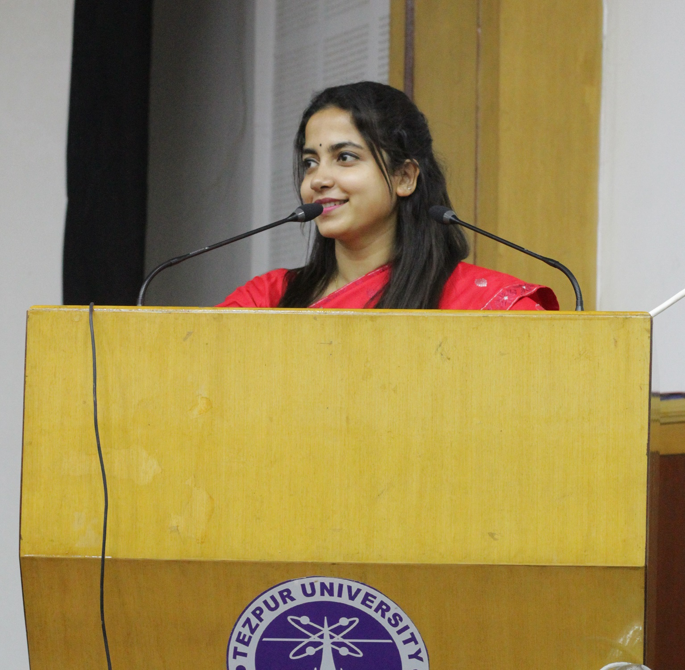

Rhishikanya Batswa
Home
About
Education
Publications
Projects
Awards & Achievements
Blog
Contact
Interactive Character Networks
Select a movie below to explore its interactive character network.
Bulbul Can Sing
Village Rockstar
Adomyo
Kothanodi
Jetuka Pator Dore
Calendar
Cactus
Antareen
Aamis
Kaaneen
Sonar Baran Pakhi
Degree ≥
0
:
Color by:
Degree
Betweenness
Closeness
Eigenvector
Search:
Go
“Every frame tells a story.”